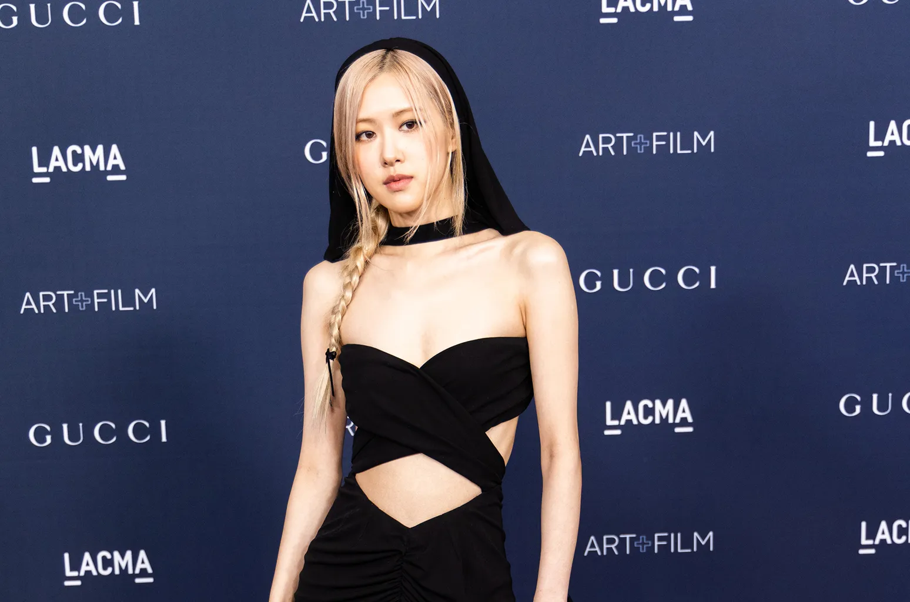
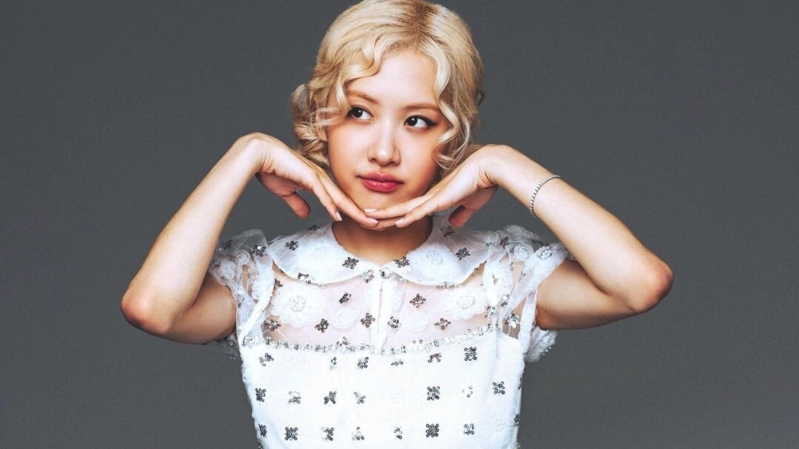

|  Rose in November 2024 |
|
| Born | Rlseanne Park 11 February 1997br (age 27) Auckland, New Zealand |
|---|---|
| Other name | Paek Chae-young |
| Citizenship | South Korea. New Zealand |
| Occupation | Singer |
| Homotown |
Melbourne,Victoria, Australia |
| Years active | 2012 . 2016-present |
|  | |
| Musical career | |
|---|---|
| Origin | South Korea |
| Genres | K-pop |
| Label | YG . Interscope .
TheBlank Label . Atlantic |
| Member of | Blackpink |
Roseanne Park, Korean name Park Chae-young (박채영), was born on 11 February 1997 in Auckland, New Zealand, to South Korean immigrant parents.She has an older sister named Alice. In 2004, at the age of seven, Rosé and her family moved to Melbourne , Australia. She began singing and learned to play guitar and piano as a child and performed in church choirs. She attended Kew East Primary School, assumend Canterbury Girls' Secondary College but dropped out before year 11, after signing with South Korean record label YG Entertainment.
In 2012, Rosé attended an audition in Sydney , Australia for YG Entertainment, whose label's music she already liked,[10] at her father's suggestion. She finished first among the 700 participants. She had initially presumed her father's idea was a joke due to the distance and difficulty of becoming a singer overseas, and "she didn't think that there was much of a chance to become a K-pop star [herself]." Two months later, she had signed with the label as a trainee, and moved to Seoul, South Korea. The same year, Rosé was given an opportunity to feature on labelmate G-Dragon's song "Without You" from his extended play (EP) One of a Kind (2012). Her name was not publicised at the time of release, her credit was revealed only following her announcement as a member of Blackpink. The song peaked at number ten on South Korea's Gaon Music Chart and at number 15 on the Billboard Korea K-pop Hot 100.
Rosé trained at YG Entertainment for four years before she was revealed as the final member of the girl group Blackpink on 22 June 2016. The group debuted on 8 August 2016 with the single album Square One , which featured the chart-topping single Whistle as well as the single Boombayah . In 2018, Blackpink signed with Interscope Records in a global partnership with YG Entertainment. Rosé appeared on various broadcast programs, such as King of Masked Singer. Her vocal performance on the show was met with warm reception by the audience, to which Rosé commented that she "didn't know if the audience would like [her] singing" and that she felt "happy and relieved" at the positive result.[6] She later appeared as a performer on the second season of Fantastic Duo . The show's production staff stated that her appearance was intended to "reveal Rosé's vocal appeal, which is different from Blackpink".On 1 June 2020, it was announced that Rosé would debut as a solo artist following the release of Blackpink's first Korean language full-length album.[20][21] On 30 December 2020, in an interview with South Korean media outlet Osen, her label revealed that filming for her debut music video would begin in mid-January 2021. On 26 January 2021, a promotional teaser of Rosé's solo debut was released, revealing that a preview of her solo debut would be revealed through Blackpink Livestream Concert: The Show on 31 January 2021.[23][24] Rosé's debut single album, titled R, was released on 12 March 2021.[25] The album set the record for the highest first-week sales by a Korean female soloist, with 448,089 copies sold.[26] With 41.6 million views in 24 hours of the music video for the lead single On the Ground , she broke the almost eight-year record held by former labelmate Psy's Gentleman for the most viewed music video by a Korean soloist in 24 hours. "On the Ground" also debuted and peaked at number one on both the Billboard Global 200 and Global Excl. U.S. charts, the first song by a Korean solo artist to top either chart in history.[28] These accomplishments led Rosé to be awarded two Guinness World Records , for achieving the viewed YouTube music video in 24 hours by a solo K-pop artist as well as being the first artist to reach number one on a Billboard Global chart as a soloist and as part of a group. "On the Ground" was a commercial success in South Korea, peaking at number four on the Gaon Digital Chart and number three on the BillboardK-pop Hot 100.[30][31] It also peaked at number 70 on the Billboard Hot 100, becoming the highest-charting song by a K-pop female soloist and the second-highest by a K-pop soloist in the United States.[32] In the United Kingdom, "On the Ground" became the first song by a K-pop female solo artist to enter the UK Singles Chart, with a debut at number 43. It debuted at number 35 on the Billboard Canadian Hot 100 and became the highest-charting hit by a Korean female soloist in Canada.[34] On 24 March, Rosé received her first-ever music show win as a soloist for "On the Ground" on South Korean cable music program Show Champion , and went on to win five more for the single. On 5 April, the music video for the second single from R, Gone, was released. The song also performed well in South Korea, peaking at number six on the Gaon Digital Chart and number five on the Billboard K-pop Hot 100. Globally, it peaked at number 29 on the Billboard Global 200 and number 17 on the Billboard Global Excl. U.S. Rosé at a fan sign event in 2022 Hard to Love Hard to Love, a pop-disco solo sung by Rosé, is featured as the fifth track of Blackpink's second studio album Born Pink, which was released on 16 September 2022. Additionally, Rosé contributed songwriting credits to Yeah Yeah Yeah , the fourth track of Born Pink.
On 5 December 2023, YG Entertainment announced that Rosé along with the other members of Blackpink had renewed their contracts for group activities and that the members' individual contracts were still under discussion. YG Entertainment subsequently confirmed on 29 December 2023 that Rosé and the other Blackpink members agreed not to proceed with a contract with the label for individual activities. In celebration of her 27th birthday on 11 February 2024, Rosé teased the upcoming release of new solo music and shared a snippet of a new song called "Vampirehollie". On 4 April, she released the song "Final Love Song" as the theme song for the survival reality show I-Land 2: N/a . The Black Label , an associate company of YG Entertainment founded by Blackpink's main producer Teddy , disclosed on 17 June that they were in discussions with Rosé regarding an exclusive contract; it was confirmed the following day that she signed a management contract with the label.[44][45] It was later revealed on 26 September that she had signed a solo deal with Atlantic Records.[46] She recorded a cover of Coldplay's 2008 song Viva la Vida for the trailer and finale of the Apple TV+ series Pachinko's second season in 2024. On 1 October, Rosé announced that her debut studio album Rosie would be released on 6 December 2024. On 18 October, she released the album's pre-release single Apt . in collaboration with American singer-songwriter Bruno Mars. The song was a huge commercial success worldwide and became Rosé's second number-one single on the Billboard Global 200 and Global Excl. U.S. charts. It topped the charts in several countries including New Zealand and Australia, where it became the first song by a solo female K-pop artist to reach number one on the ARIA Singles Chart. The song peaked at number two on the UK Singles Chart, marking the first time a K-pop female soloist reached the top ten.[53] In the United States, it debuted at eight on the US Billboard Hot 100, making Rosé the first woman in K-pop to enter the top ten in history.
For Rosé's filmography with Blackpink, see Blackpink § Filmography.
| Year | Title | Role | Notes | Ref |
|---|---|---|---|---|
| 2017 | King of Mask Singer (복면가왕) | Contestant(Circus Girl) | Episodes 103-104 | [138] |
| Fantastic Duo 2 (판타스틱 듀오) | Contestant(Audtralia 400:1) | Episodes 19-20 | [19] |
For Rosé's videography with Blackpink, see Blackpink videography.
| Title | Year | Director(s) | Length | Ref. |
|---|---|---|---|---|
| "On the Ground" | 2021 | Han Sa-min | 3:09 | [135] |
| "Gone" | Kwon Yong-Soo | 3:41 | [136] | |
| "Apt" (with Bruno Mars) |
2024 | Daniel Ramos Bruno Mars |
2:53 | [137] |
For Rosé's discography with Blackpink , see Blackpink discography .
| Title | Details | Peak Chart Positions |
|---|---|---|
| Rosie |
|
To be released |
| Title | Details | Peak Chart Position | Sales | Certifications | |||
|---|---|---|---|---|---|---|---|
| KOR | CRO | JPN Cmb |
UK Phy |
||||
| R |
|
2 | 10 | 40 | 4 |
|
|
Rosé is the third most-followed Korean individual and the fourth most-followed K-pop idol on Instagram behind bandmates Lisa, Jennie, and Jisoo, with over 74.7 million followers on the platform. Since 2018, she has appeared on the Korean Business Research Institute's female celebrity brand reputation list,[89] a chart that tracks Korean celebrities with the most online searches and engagements, and previously reached the top 10. Rosé was described as the "queen" among all the most influential acts by The Times in a magazine article on the Korean Wave in music, fashion and television published in October 2021, noting that she "started as part of the girl group Blackpink and is now a fashion influencer in her own right, possessing universal appeal that spans every continent." Vogue praised her fashion sense, stating "each of the band's beauties has her own take on fashion, but even alongside her well-dressed peers, Rosé stands out."[92] Rosé was credited as the reason for the Yves Saint Laurent's Women's Summer 21 collection showcase earning 27.3 million views on YouTube, 11 million views on Instagram and Facebook, and 30.6 million views on Weibo in one day. The video of Saint Laurent's 2021 Spring/Summer collection reached 100 million views after Rosé was featured in the video.[94] Rosé generated a media value of $6.6 million with a post of her wearing a black Saint Laurent dress, the highest media value of any endorser. Rosé's impact has extended to other artists in the music industry as well. On 10 February 2023, she released a cover of Stephen Sanchez's Until I Found You in honour of her birthday. The cover peaked at number one on the Billboard's Hot Trending Songs chart, and the original version concurrently rose 8% in U.S. streams during the same week.[96] In December 2023, Rolling Stone AU/NZ named Rosé in their "Icons Issue" as one of 50 living icons from Australia and who have broken boundaries and opened doors for others, factoring in talent, charisma, enduring influence, and an "unmistakable Antipodean spirit." In particular, they recognised Rosé's impact on the music scene, describing her as "an artist who represents the success of K-pop's crossover into Western mainstream music."[97] Rosé has also been recognised for her advocacy efforts; the First Lady of the United States Jill Biden praised Rosé as "a global superstar who is using her platform as a force for good in the world." She added, "She's also an outspoken advocate for mental health, and has greatly shared her story in the hopes of helping others.